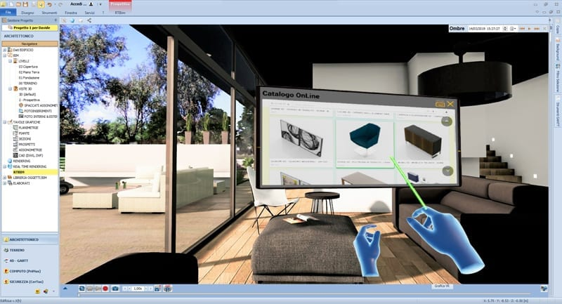
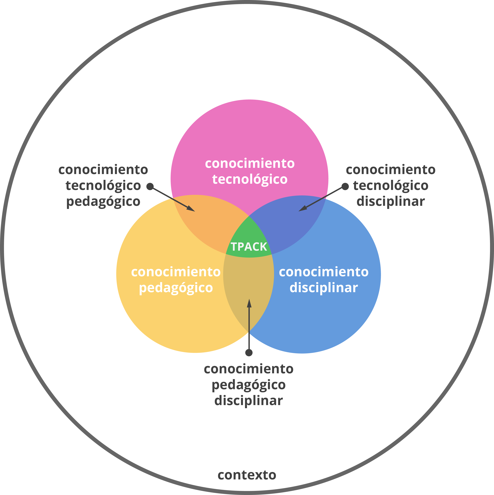

Universidad de Nariño
Facultad de Ciencias Exactas y Naturales
Licenciatura en Informática
2026
Integrantes:
La educación contemporánea exige un cambio de paradigma: pasar de la visualización pasiva de textos bidimensionales a la exploración activa en entornos inmersivos. Este libro digital interactivo aborda el impacto pedagógico de las Tecnologías de la Información y Comunicación (TICs) mediante la integración de la Realidad Aumentada (RA) y la Realidad Virtual (RV).
Utilizando escenarios técnicos de redes e infraestructuras científicas como entornos de prueba, se demuestra cómo conceptos abstractos se transforman en objetos virtuales tangibles y manipulables, optimizando los procesos cognitivos de retención espacial y el aprendizaje significativo.
Los gráficos en 3D rompen los límites del salón tradicional. Al interactuar con un objeto tridimensional, el cerebro no ve un simple dato plano, sino que lo procesa como una experiencia real vivida.
Esto le da al estudiante un rol activo para descubrir cómo funcionan las cosas. Sus grandes ventajas son: entender escalas de inmediato, experimentar sin riesgos materiales y reducir los costos de infraestructura de los laboratorios físicos.

La inmersión se divide en dos grandes vertientes: la Realidad Aumentada (RA), que superpone elementos digitales al mundo real, y la Realidad Virtual (RV), que transporta al usuario a entornos simulados completamente sintéticos.
Este desarrollo viene fuertemente impulsado por la industria del entretenimiento. El cine de animación contemporáneo y los videojuegos de mundo abierto han perfeccionado técnicas de representación espacial dinámicas y renderizado en tiempo real que hoy adoptamos con fines pedagógicos.
Aprender solo leyendo textos o mirando dibujos planos en un tablero puede ser difícil, ya que el cerebro lucha por imaginarse cómo funcionan las cosas en el mundo real.
Los Objetos Virtuales en 3D solucionan esto funcionando como un puente: transforman la teoría aburrida en un elemento interactivo que puedes tocar y explorar. En lugar de memorizar una definición de memoria, el estudiante puede rotar, mirar de cerca y desarmar el objeto, aprendiendo cómo funciona mediante la experiencia directa y el juego.
Para que la Realidad Aumentada y Virtual funcionen en clase, no basta con la novedad: la tecnología solo sirve si ayuda a entender mejor el tema de estudio.
Con este enfoque, creamos laboratorios virtuales en el celular. Esto hace que la educación sea más accesible, permitiendo a los estudiantes experimentar y cometer errores de forma segura con sistemas complejos, sin necesidad de equipos físicos costosos.

Como ejemplo práctico de implementación conceptual, un Firewall actúa como un sistema de seguridad que filtra el tráfico de red basado en reglas estrictas.
¿Cómo ayuda el modelo 3D? Al mirarlo de forma interactiva, puedes ver cómo los paquetes de datos autorizados logran pasar, mientras que las amenazas son rechazadas por esta barrera digital.
Otro ejemplo fundamental es la Topología en Bus, donde todos los dispositivos comparten un único canal físico centralizado de transmisión de datos.
Pedagogía del Error: El uso de simuladores 3D permite al docente ilustrar fallas de manera segura. Al inspeccionar el bus, el alumno deduce de forma lógica por qué la ruptura del cable central interrumpe la colisión de paquetes y deja inoperante a todo el aula informática.
La arquitectura Cliente-Servidor distribuye las tareas entre los proveedores de recursos (servidores) y los demandantes de información (clientes).
Análisis de Roles: Es un modelo de comunicación donde un equipo (cliente) solicita recursos o servicios, y otro equipo especializado (servidor) los provee. El cliente inicia la acción (pide algo) y el servidor procesa y responde.
El Direccionamiento IP es el esquema lógico que identifica de forma única a cada dispositivo en una red física o virtual.
Apropiación Conceptual: Una dirección IP es el "número de teléfono" único o dirección postal de un dispositivo (computadora, celular...) en internet o en una red local. Permite que los equipos se identifiquen, envíen y reciban información correctamente, generalmente formada por cuatro números (ej. 192.168.1.1) que identifican la red y el dispositivo específico.
Aqui Puedes ver Todos los Modelos 3D cargados en esta Pagina.
¿Qué ventaja pedagógica principal ofrece la manipulación de modelos 3D y RA frente a los textos planos?
Dede, C. (2009). Immersive interfaces for engagement and learning. Science, 323(5910), 66-69. https://doi.org/10.1126/science.1167311
Cabero Almenara. & Marín Díaz, V. (2018). Blended learning y realidad aumentada: Experiencias de aprendizaje en la educación superior. Ried. Revista Iberoamericana de Educación a Distancia, 21(1), 57-74. https://doi.org/10.5944/ried.21.1.18719
Ruiz Ana. & Sánchez Javier. & Olmos Marina. (2017). La Realidad Aumentada (RA): Recursos y propuestas para la innovación educativa. Revista Electrónica Interuniversitaria de Formación del Profesorado, 20(2), 183-203. https://www.redalyc.org/pdf/2170/217050478013.pdf
Jane Carla. & Sánchez Goar. (2018). Simulación de redes de computadoras como medio de enseñanza de la carrera Ingeniería Informática. Luz, 17(1), 100-106. https://www.redalyc.org/journal/5891/589164904012/html/
"La tecnología no reemplaza al docente, pero el docente que utiliza tecnología reemplazará al que no lo hace."
TICs de la Educación
© 2026 - Universidad de Nariño